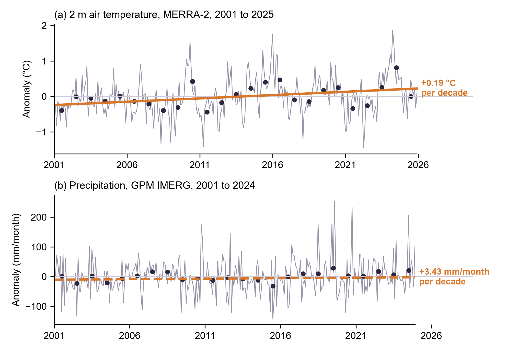
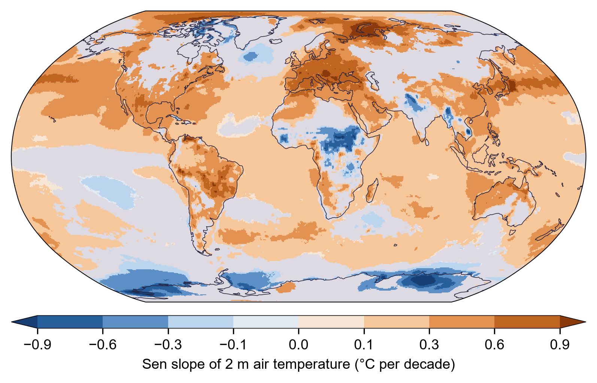
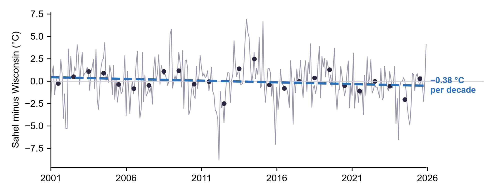

Technical report, NASA International Space Apps Challenge 2026,
challenge “Be An Earth System Trend Detective!”
Open NASA Earth observation data can show where the environment is changing, but turning gridded archives into a statistically tested trend still requires specialist skills. We built Terra-scope AI, a web application in which a user chooses a variable, a region and a period, and the application constructs the monthly regional series from NASA data and tests it for a monotonic trend. The application serves five variables on a common 0.5° global grid for 2001 to 2025: precipitation from GPM IMERG, soil moisture, land air temperature and evapotranspiration from the GLDAS Noah model, and 2 m air temperature from the MERRA-2 reanalysis. Trends were tested with the Seasonal Mann-Kendall test and their rates estimated with the seasonal Sen slope; global maps controlled the false discovery rate across 259,200 grid cells, and differences between two regions were tested on the difference series with a block-bootstrap interval. Global-mean 2 m air temperature increased by 0.17 °C per decade (p < 0.001, n = 300 months) and Arctic temperature by 0.32 °C per decade (p < 0.001). Rainfall over the Mekong Delta increased by 3.4 mm/month per decade, but the increase was not significant (p = 0.077, n = 288). The Sahel and Wisconsin had trends of opposite sign, yet the difference between them was not established (95% interval −0.87 to +0.12 °C per decade). An independent recomputation reproduced the application in all 48 executed comparisons. The main limitation is that the significance rule assumes serial independence, which inflates false positives in strongly autocorrelated series.
Keywords: trend detection; Seasonal Mann-Kendall test; Sen slope; false discovery rate; NASA Earth observations
NASA distributes decades of open data on rainfall, soil moisture and temperature. These products are, however, spread across several data centres, stored as large gridded files and documented for specialists, so that choosing and reading the appropriate product can be more difficult than the analysis itself. Monthly climate series also combine a strong seasonal cycle with large year-to-year variability. A series that appears to rise on a chart is therefore not, by itself, evidence of a trend: a statistical test is required to judge whether a change of the observed size could plausibly have arisen without any underlying trend.
Existing tools address parts of this problem. NASA Giovanni produces area-averaged time series and maps from many NASA products without requiring the user to download files, and the KNMI Climate Explorer offers statistical analyses of a wide range of climate datasets. Neither tool, as far as we are aware, guides a non-specialist from a question about a place to a tested trend with its uncertainty stated in plain language. The challenge set by the organisers asks for exactly this sequence of five steps: choose a variable, choose a region, choose a period, construct the time series, and test whether the trend is statistically significant.
Our first objective was to build a web application that carries out these five steps for any region on Earth and reports each result together with its uncertainty and its limitations, for readers ranging from secondary-school students to researchers. Our second objective was to use the application to examine a small set of questions about recent climate change, and to verify that the numbers it reports are computed correctly. Before analysing the data we formulated the following hypotheses and predictions:
The application uses NASA products obtained from the Goddard Earth Sciences Data and Information Services Center (GES DISC) with the same variable codes as NASA Giovanni, retrieved through the Harmony subsetting service, which extracts a variable without altering its values, units or grid (Table 1). Precipitation came from the Integrated Multi-satellitE Retrievals for GPM (IMERG; Huffman et al., 2023); soil moisture in the 0 to 10 cm layer, land air temperature and evapotranspiration came from the Global Land Data Assimilation System (GLDAS) Noah model (Beaudoing et al., 2020); and 2 m air temperature came from the Modern-Era Retrospective analysis for Research and Applications, Version 2 (MERRA-2; Global Modeling and Assimilation Office & Pawson, 2015). IMERG Final is released about 3.5 months after the observation month, so the last month with data was September 2025. Vegetation index and land surface temperature from MODIS on Terra (Didan, 2021; Wan et al., 2021; Running et al., 2021) were obtained through AppEEARS for three sample regions in Vietnam only and are not used in the results below.
Table 1. NASA products used for the results in this report. Native grid is the resolution of the distributed product; all products were regridded to a common 0.5° grid (Section 2.2).
| Variable | Product (short name, version) | Type | Native grid | Period used |
|---|---|---|---|---|
| Precipitation | GPM IMERG Final monthly (GPM_3IMERGM, V07) | Satellite estimate, gauge-adjusted | 0.1° | 2001-01 to 2025-09 |
| Soil moisture, 0 to 10 cm | GLDAS Noah monthly (GLDAS_NOAH025_M, 2.1) | Land surface model | 0.25° | 2001-01 to 2025-12 |
| Air temperature over land | GLDAS Noah monthly (as above) | Land surface model | 0.25° | 2001-01 to 2025-12 |
| Evapotranspiration | GLDAS Noah monthly (as above) | Land surface model | 0.25° | 2001-01 to 2025-12 |
| Air temperature, 2 m | MERRA-2 (M2IMNXASM, 5.12.4) | Reanalysis | 0.5° × 0.625° | 2001-01 to 2025-12 |
Independent reference data used only for checks: CRU TS 4.10 and GPCC v2022 gridded gauge precipitation, GHCN monthly station summaries (GSOM), and SMAP Level 3 soil moisture, version 9 (O’Neill et al., 2023).
Fill values were set to missing, values were converted to common units (mm/month, m³/m³ and °C) and values outside physical ranges were removed. GLDAS cells whose soil moisture equalled the full layer capacity (3.95% of land cells, mainly on Greenland and glaciers) represent ice rather than saturated soil, so values above 0.95 m³/m³ were removed. All products were then regridded to a common 0.5° global grid (720 × 360 = 259,200 cells) by area-conservative averaging, with weights equal to the overlapping area on the sphere; a cell was retained only when at least 50% of its area had valid data. We chose 0.5° because it is the native resolution of the coarsest rainfall reference (CRU TS), and conservative averaging preserves regional means, which bilinear interpolation does not.
A region was defined by a bounding box (west, south, east and north edges), a named preset or a single grid cell. Boxes crossing the 180° meridian or smaller than one grid cell were rejected. The monthly regional value was the cos(latitude)-weighted mean of the 0.5° cells whose centres lie in the box, and missing months were left missing. Monthly anomalies were computed as each month’s value minus the mean of the same calendar month over the selected period. A series was tested only if it spanned at least 10 years and at least 70% of its months had data.
We tested for a monotonic trend with the Seasonal Mann-Kendall (SMK) test (Hirsch et al., 1982), which compares each calendar month only with the same month in other years, so that the seasonal cycle cannot produce a trend. The rate of change was estimated with the seasonal Sen slope (Sen, 1968) and is reported per decade. Both were computed with pyMannKendall (Hussain & Mahmud, 2019) with a period of 12 months. A trend was called significant when the SMK p-value was below α = 0.05. As diagnostics that do not change this verdict, we also report the Hamed-Rao modified Mann-Kendall p-value on the anomalies (Hamed & Rao, 1998), which inflates the variance of the test statistic to account for autocorrelation, and a 95% interval from ordinary least squares on the anomalies.
Every cell of the 0.5° grid was tested separately with a vectorised SMK. Because testing 259,200 cells at α = 0.05 would be expected to mark about 13,000 cells as significant even if no cell had a trend, we controlled the false discovery rate at 0.05 across all cells with data using the Benjamini-Hochberg procedure (Benjamini & Hochberg, 1995). The grid implementation omits the tie correction in the SMK variance.
To test whether two regions changed at different rates, we formed the difference series (anomaly of region A minus anomaly of region B for each month). Its rate is the Sen slope of that series, its p-value comes from the Hamed-Rao test, and its 95% interval from a moving-block bootstrap (Künsch, 1989) with 12-month blocks and 1,000 resamples. A difference was reported as established only when p < 0.05 and the interval excluded zero; when p < 0.05 but the interval included zero, the comparison was reported as inconclusive. Before a comparison, deterministic checks confirmed that both sides measure the same quantity in the same units over comparable periods with sufficient data. Comparisons between two datasets or two periods have no formal test in the application and were treated as descriptive.
The processed grids were compared with the independent references listed under Table 1 using Pearson correlation of monthly values per cell or per station, and with global means from the literature. In addition, one regional series was exported manually from NASA Giovanni and compared month by month with the application.
To test hypothesis 4, we wrote an independent implementation (an “oracle”) that reads the processed NetCDF files directly and recomputes the weighted regional means, the SMK test, the Sen slope, the Hamed-Rao test, the OLS interval and the Benjamini-Hochberg procedure without importing any code from the application. The oracle was run on 25 regional cases (including invalid requests), two complete global maps, one two-region comparison and 15 synthetic series with known properties, and five scenarios were checked in a browser, including both PDF report editions. A comparison passed when every quantity was within a stated tolerance (6 × 10⁻⁷ absolute for monthly values, which the interface rounds to six decimals; 10⁻⁹ relative for Sen slopes; 10⁻⁷ relative for p-values) and every significance flag was identical. A simulation of 200 first-order autoregressive series with coefficient 0.8 and no trend was used to estimate the false-positive rate of the decision rule.
The backend was written in Python with FastAPI and the interface in React with TypeScript. Users can explore maps and regional trends, compare two regions, datasets or periods, export reports, and ask questions in plain language. The question-answering assistant uses the Gemini model, called only from the backend. The model can call seven allow-listed tools that use the same services as the web pages; every number it cites is compared with the tool results and, if any number does not match, the answer is regenerated once and otherwise replaced by a template answer that uses no model. The assistant therefore explains results but does not compute them.
The processed data agreed with the independent references (Table 2). IMERG correlated with GPCC at r = 0.92 over 73,527 cells and with 34,313 GHCN stations at r = 0.89; both correlations fell to 0.32 and 0.21 when one series was shifted by one month. Global-mean MERRA-2 temperature and IMERG rainfall were within published ranges. Agreement between GLDAS and SMAP soil moisture was weaker (r = 0.69). The Giovanni export and the application agreed at r = 0.9996.
Table 2. Checks of the processed 0.5° data against independent sources. r is the Pearson correlation of monthly values unless stated otherwise.
| Comparison | Result | Sample |
|---|---|---|
| Recomputation from the raw files | All compared cells match; global means differ by at most 0.19% | 6 months per product |
| IMERG vs GPCC, per cell | r = 0.92 (0.32 with a one-month shift) | 73,527 cells |
| IMERG vs GHCN-GSOM stations | r = 0.89 (0.21 with a one-month shift) | 34,313 stations |
| IMERG vs CRU TS, map of mean rainfall | r = 0.96 | Global map |
| GLDAS vs MERRA-2 air temperature, map of means | r = 0.997; mean difference over land 0.23 °C | Global map |
| GLDAS 0 to 10 cm vs SMAP soil moisture | r = 0.69 | 33,099 cells |
| MERRA-2 global-mean 2 m temperature | 14.6 °C | Expected 13.5 to 16 °C |
| IMERG global-mean rainfall | 2.76 mm/day | GPCP about 2.7 mm/day |
| Giovanni area average vs application, GLDAS soil moisture, box 104.8° E to 106.3° E, 9.2° N to 10.8° N | r = 0.9996; mean absolute difference 0.0018 m³/m³ | 293 months |
Global-mean 2 m air temperature increased significantly by 0.17 °C per decade from 2001 to 2025, and Arctic temperature by 0.32 °C per decade (both p < 0.001, n = 300; Table 3). Temperature over the Southern Ocean and Antarctica decreased by 0.26 °C per decade (p < 0.001). Rainfall over the Mekong Delta increased by 3.43 mm/month per decade from 2001 to 2024, but the trend was not significant (p = 0.077, n = 288; Figure 1b); over the whole Mekong basin the rate was similar (3.18 mm/month per decade, p = 0.070). Rainfall over the Amazon Basin decreased significantly (−7.1 mm/month per decade, p < 0.001). Over the Mekong Delta, 2 m air temperature increased by 0.19 °C per decade (p < 0.001, n = 300; Figure 1a).
The SMK and Hamed-Rao p-values led to different verdicts in 4 of the 21 regional series that were tested in the verification suite. Three of these appear in Table 3: over Hanoi and over the Southern Ocean the SMK test was significant while the Hamed-Rao test was not, and over the Mekong basin the reverse held.
Table 3. Regional trends. Slopes are seasonal Sen slopes per decade. The verdict uses the SMK p-value at α = 0.05; the Hamed-Rao p-value is a diagnostic. n is the number of months with data; no month was missing in any series. Coverage is the fraction of the box with valid cells (below 100% where the variable is defined over land only).
| Region | Variable (dataset), period | Slope per decade | SMK p | Hamed-Rao p | n | Verdict |
|---|---|---|---|---|---|---|
| Whole world | 2 m air temperature (MERRA-2), 2001 to 2025 | +0.167 °C | < 0.001 | 0.011 | 300 | Significant |
| Arctic, north of 66.5° N | 2 m air temperature (MERRA-2), 2001 to 2025 | +0.322 °C | < 0.001 | < 0.001 | 300 | Significant |
| Hanoi, Vietnam | 2 m air temperature (MERRA-2), 2001 to 2025 | +0.228 °C | < 0.001 | 0.090 | 300 | Significant |
| Southern Ocean and Antarctica, south of 60° S | 2 m air temperature (MERRA-2), 2001 to 2025 | −0.262 °C | < 0.001 | 0.23 | 300 | Significant |
| Amazon Basin | Precipitation (IMERG), 2001 to 2024 | −7.12 mm/month | < 0.001 | 0.033 | 288 | Significant |
| Mekong Delta, Vietnam | Precipitation (IMERG), 2001 to 2024 | +3.43 mm/month | 0.077 | 0.29 | 288 | Not significant |
| Mekong basin | Precipitation (IMERG), 2001 to 2024 | +3.18 mm/month | 0.070 | < 0.001 | 288 | Not significant |
| Central Highlands, Vietnam (97% coverage) | Evapotranspiration (GLDAS), 2001 to 2025 | +6.79 mm/month | < 0.001 | < 0.001 | 300 | Significant |
| California, USA (75% coverage) | Soil moisture 0 to 10 cm (GLDAS), 2001 to 2025 | +0.0019 m³/m³ | 0.14 | 0.38 | 300 | Not significant |
Boxes (west, south, east, north): Amazon Basin −75, −15, −50, 5; California −124.5, 32.5, −114, 42; Mekong Delta 104.4, 8.5, 106.9, 11.1; Mekong basin 94, 8, 110, 35; Central Highlands 107.2, 11.2, 109.0, 15.5; Hanoi 105.3, 20.5, 106.1, 21.4.

For MERRA-2 2 m air temperature over 2001 to 2025, 163,713 of the 259,200 cells (63%) had a significant trend after false discovery rate control: 142,545 cells (55%) increased and 21,168 cells (8%) decreased (Figure 2). Significant decreases were concentrated over the Southern Ocean and parts of Antarctica, central Africa and South and Southeast Asia. For IMERG precipitation over 2001 to 2024, 73,266 of the 257,760 cells with data (28%) had a significant trend.

From 2001 to 2025, 2 m air temperature over the Sahel (17° W to 30° E, 10° N to 18° N) decreased by 0.21 °C per decade (SMK p < 0.001), whereas over Wisconsin, USA (92.9° W to 86.8° W, 42.5° N to 47.1° N) it increased by 0.21 °C per decade (SMK p = 0.15; n = 300 for both). The difference series had a Sen slope of −0.38 °C per decade and a Hamed-Rao p-value of 0.022, but its 95% block-bootstrap interval (−0.87 to +0.12 °C per decade) included zero, so the comparison was classified as inconclusive (Figure 3). Over the Sahel, the two temperature products disagreed in sign: MERRA-2 gave −0.21 °C per decade and GLDAS +0.80 °C per decade, both with SMK p < 0.001.

All 48 executed oracle comparisons passed and none failed (Table 4). The largest differences were 5 × 10⁻⁷ for monthly values (the interface rounds to six decimals), 4 × 10⁻¹⁴ for Sen slopes and 2 × 10⁻¹⁶ for p-values, and no cell of the two global maps received a different verdict. Four planned checks were not run: the content of Gemini answers, recomputation of the bootstrap interval, drawing a box on the map, and the experimental outlook page. In the autocorrelation simulation, the SMK rule rejected the null hypothesis in 51.5% of 200 trend-free series and the Hamed-Rao test in 24%, against a nominal 5%.
Table 4. Verification results as of 15 November 2026.
| Suite | Result |
|---|---|
| Independent oracle: 25 regional cases, 2 global maps, 1 comparison, 15 synthetic series, 5 browser scenarios | 48 passed, 0 failed, 1 inconclusive (false-positive simulation), 4 not run |
| Backend unit tests | 258 passed |
| Data pipeline tests | 63 passed, 2 skipped |
| Frontend unit tests | 66 passed |
| Live API and report PDF tests on NASA data | 26 passed, 5 skipped (Gemini only) |
| Browser end-to-end tests | 13 passed |
The results support hypothesis 1. Global-mean near-surface temperature increased significantly over 2001 to 2025, at a rate (0.17 °C per decade) within the plausibility range used in our data checks (0.1 to 0.45 °C per decade), and the Arctic warmed at about twice the global rate. The cooling found over the Southern Ocean and Antarctica rests on one reanalysis, and its Hamed-Rao p-value (0.23) indicates that the evidence is weak once autocorrelation is allowed for.
Hypothesis 2 was not supported at the 5% level. Rainfall over the Mekong Delta rose by 3.4 mm/month per decade, but with p = 0.077 the test could not exclude chance. This result does not show that rainfall has not changed: with only 24 years of highly variable monthly rainfall (Figure 1b), the record may be too short to detect a trend of this size, and the verdict was sensitive to the period chosen (adding 2025 gave p = 0.041, with a Hamed-Rao p-value of 0.15). We therefore regard the Mekong Delta rainfall trend as unresolved.
The comparison of the Sahel and Wisconsin supports hypothesis 3. Although the two regional trends have opposite signs, the trend of their difference was not established, because the bootstrap interval included zero. Reporting the two trends side by side would have suggested a contrast that the data do not confirm. The two regions were chosen after their individual trends had been seen, so this example illustrates the method rather than testing a prior hypothesis about these regions. The disagreement between MERRA-2 and GLDAS over the Sahel shows a second reason for caution: two NASA products can disagree in sign, and the application cannot determine which is correct. It therefore names the dataset on every result.
Hypothesis 4 was supported for every component that was checked. The oracle reproduced all regional, map and comparison values within numerical rounding. This establishes that the application computes the documented method correctly. It does not establish that every reported trend reflects a physical change.
The most important limitation concerns the decision rule. The SMK test assumes that the years are independent, but climate series are often autocorrelated. In our simulation with strong autocorrelation, the rule produced false positives in about half of trend-free series. The Hamed-Rao test reduced this rate but did not remove the problem, and the two p-values disagreed for 4 of 21 regional series. Small SMK p-values for strongly autocorrelated series, such as the Southern Ocean result, should therefore be read with caution. Several corrections, including the test of Hirsch and Slack (1984), are being evaluated, and the application displays the Hamed-Rao p-value beside the verdict so that users can see when the two disagree.
Further limitations follow from the data. Four of the five gridded variables come from a land surface model or a reanalysis, so their trends may partly reflect model physics or changes in the assimilated observations. The record covers at most 25 years. On the global maps, omitting the tie correction makes the precipitation map conservative in dry regions: 4,151 IMERG cells would change their verdict if the correction were applied. Finally, the content of the AI assistant’s answers, the bootstrap interval and the experimental outlook page were not checked by the oracle, and the outlook page was outside the scope of this report.
Two extensions would address the main gaps: adopting an autocorrelation-robust decision rule once one of the candidate corrections has been validated, and adding formal tests for differences between datasets and between periods, which the application currently treats as descriptive. In conclusion, Terra-scope AI turns open NASA rainfall, soil moisture and temperature data into tested regional and global trends that non-specialists can explore and specialists can audit, and the independent recomputation confirms that the numbers it reports match the documented method.
We thank the NASA GES DISC, LP DAAC and NSIDC DAAC for open access to the data, the organisers of the NASA Space Apps Challenge, and Dr James Acker for setting the challenge. Terra-scope AI is a student project; it is not an official NASA product and is not endorsed by NASA.
All NASA products are openly available from the links in Appendix A and require a free NASA Earthdata Login. The source code, the download and cleaning scripts, the verification suite and the scripts that produced the figures in this report (report/source/) are available at github.com/QuangTam1101/terra-scope-ai.
Beaudoing, H., Rodell, M., & Hydrological Sciences Laboratory. (2020). GLDAS Noah land surface model L4 monthly 0.25 x 0.25 degree, version 2.1 [Data set]. NASA GES DISC. https://doi.org/10.5067/SXAVCZFAQLNO
Benjamini, Y., & Hochberg, Y. (1995). Controlling the false discovery rate: A practical and powerful approach to multiple testing. Journal of the Royal Statistical Society: Series B, 57(1), 289–300. https://doi.org/10.1111/j.2517-6161.1995.tb02031.x
Didan, K. (2021). MODIS/Terra vegetation indices monthly L3 global 1km SIN grid V061 [Data set]. NASA LP DAAC. https://doi.org/10.5067/MODIS/MOD13A3.061
Global Modeling and Assimilation Office, & Pawson, S. (2015). MERRA-2 instM_2d_asm_Nx: 2d, monthly mean, single-level, assimilation, single-level diagnostics V5.12.4 [Data set]. NASA GES DISC. https://doi.org/10.5067/5ESKGQTZG7FO
Hamed, K. H., & Rao, A. R. (1998). A modified Mann-Kendall trend test for autocorrelated data. Journal of Hydrology, 204(1–4), 182–196. https://doi.org/10.1016/S0022-1694(97)00125-X
Hirsch, R. M., & Slack, J. R. (1984). A nonparametric trend test for seasonal data with serial dependence. Water Resources Research, 20(6), 727–732. https://doi.org/10.1029/WR020i006p00727
Hirsch, R. M., Slack, J. R., & Smith, R. A. (1982). Techniques of trend analysis for monthly water quality data. Water Resources Research, 18(1), 107–121. https://doi.org/10.1029/WR018i001p00107
Huffman, G. J., Stocker, E. F., Bolvin, D. T., Nelkin, E. J., & Tan, J. (2023). GPM IMERG Final precipitation L3 1 month 0.1 degree x 0.1 degree V07 [Data set]. NASA GES DISC. https://doi.org/10.5067/GPM/IMERG/3B-MONTH/07
Hussain, M., & Mahmud, I. (2019). pyMannKendall: A python package for non parametric Mann Kendall family of trend tests. Journal of Open Source Software, 4(39), 1556. https://doi.org/10.21105/joss.01556
Künsch, H. R. (1989). The jackknife and the bootstrap for general stationary observations. The Annals of Statistics, 17(3), 1217–1241. https://doi.org/10.1214/aos/1176347265
O’Neill, P. E., Chan, S., Njoku, E. G., Jackson, T., Bindlish, R., & Chaubell, J. (2023). SMAP L3 radiometer global daily 36 km EASE-Grid soil moisture, version 9 [Data set]. NASA NSIDC DAAC. https://doi.org/10.5067/4XXOGX0OOW1S
Running, S., Mu, Q., Zhao, M., & Moreno, A. (2021). MODIS/Terra net evapotranspiration gap-filled 8-day L4 global 500m SIN grid V061 [Data set]. NASA LP DAAC. https://doi.org/10.5067/MODIS/MOD16A2GF.061
Sen, P. K. (1968). Estimates of the regression coefficient based on Kendall’s tau. Journal of the American Statistical Association, 63(324), 1379–1389. https://doi.org/10.1080/01621459.1968.10480934
Wan, Z., Hook, S., & Hulley, G. (2021). MODIS/Terra land surface temperature/emissivity 8-day L3 global 1km SIN grid V061 [Data set]. NASA LP DAAC. https://doi.org/10.5067/MODIS/MOD11A2.061